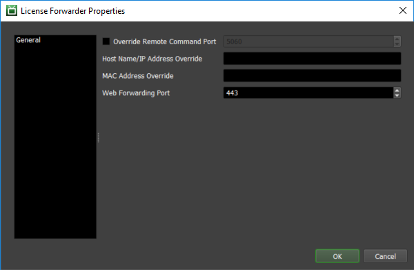

(Unsupported) License Forwarder¶
Warning
Topics covered in this page refer to legacy Thinkbox usage-based licensing (UBL), which is no longer available as of September 30, 2025. The UBL feature in Deadline 10 is now available through AWS Deadline Cloud UBL. For detailed setup instructions, please see the Deadline Cloud UBL Documentation.
For more details, please refer to the marketplace website.
Overview¶
The License Forwarder is an application that acts as a license server for third party applications when using Legacy Third Party Usage-Based Licensing. In order to use 3rd Party render time, at least one instance of the License Forwarder must be running and connected to the Repository, and Workers must be able to connect to it.
Note
The License Forwarder must not run on the same machine as a Deadline Worker or a license server as port binding conflicts will occur otherwise.
In addition, the License Forwarder can be used as a proxy for Deadline Usage-Based Licensing. See the Web Forwarding documentation for more information.
Running the License Forwarder¶
To start the License Forwarder:
On Windows, you can start the License Forwarder by double clicking on
deadlinelicenseforwarder.exein the Deadline installed folder, usually underC:\Program Files\Thinkbox\Deadline[VERSION]\bin
On Linux, you can start the License Forwarder from a terminal window by running the
deadlinelicenseforwarderscript in the bin folder, usually under/opt/Thinkbox/Deadline[VERSION]/bin
On macOS, you can start the License Forwarder from a terminal by running the
DeadlineLicenseForwarderapplication in/Applications/Thinkbox/Deadline[VERSION]/DeadlineLicenseForwarder[VERSION].app/Contents/MacOS
where [VERSION] is the MAJOR release number of Deadline, such as 10.
Setup¶
The License Forwarder requires a valid certificate for each third party application that will be using 3rd Party render time. When the License Forwarder is launched for the first time, it will prompt the user to specify a path where these 3rd Party certificates can be located. Alternatively, the 3rd Party certificate path can be set manually in the Client Configuration.
You can also configure the License Forwarder through the command line using the -sslpath command line flag to set the 3rd Party certificate path. For example:
deadlinelicenseforwarder.exe -sslpath C:\3PL_Certs
License Forwarder can also be configured to automatically start and recover from a crash/shutdown via the Client Configuration ini file.
Linux Open File Limits¶
If the License Forwarder is running on Linux, it is recommended that you increase the maximum number of open files for the License Forwarder process. Since socket connections are treated as open files on Linux it is very easy for the default maximum value (1024) to be reached in an active farm. We recommend setting it to at least 200000. You can set by running the following command before running the License Forwarder:
ulimit -n 200000
The License Forwarder will check the file limit on startup and print a warning to the beginning of the log if it is set to a value that is too low, but will run anyway.
Registration Server Errors¶
When running the License forwarder you may see the following errors in your logs:
Phone home failed, server did not respond.
or
Phone home registration failed.
This is from a deprecated feature and will not affect the normal running of the Deadline Software. Upgrading to the latest version of Deadline will remove these messages.
License Forwarder Scaling¶
You can run as many License Forwarders as you want within a region; however, these License Forwarders must be running on separate machines. Each License Forwarder can handle about 500 Workers at once, so when deciding how many License Forwarders to run for a region you should take into consideration how many Workers are running in that region. When running multiple License Forwarders in a single region the load is balanced between the License Forwarders automatically. Workers handle License Forwarder selection automatically, so no configuration is required. To start load balancing your License Forwarder requests all that is required is that you start up additional License Forwarders within the desired region.
Region Behavior¶
If your Repository is configured to use multiple Regions, Workers running in a specific region will only connect to a License Forwarder that’s running in the same region, which means at least one License Forwarder must be running in each region.
License Forwarders Panel¶
The License Forwarders can be monitored through the Deadline Monitor with the “License Forwarders” panel. You can use this panel to check the state of the License Forwarders and to monitor their CPU and memory usage. Remote commands can be sent to License Forwarders through the right-click menu.

License Forwarder Settings¶
You can also configure License Forwarder specific settings by right-clicking on a License Forwarder in the License Forwarders panel and selecting ‘Modify License Forwarder Properties`.
These are the general License Forwarder settings:
Override Remote Command Port: If enabled, this port will be used by the License Forwarder for remote commands instead of a random port.
Host Name/IP Address Override: Overrides the Host name/IP address used by the Workers to connect to the License Forwarder, and for remote commands.
MAC Address Override: This is used to override the MAC Address associated with this License Forwarder. This is useful in the event that the License Forwarder defaults to a different MAC Address than the one needed for Wake On Lan.
Web Forwarding Port: The port the License Forwarder will use for Web Forwarding.

{kind=link}